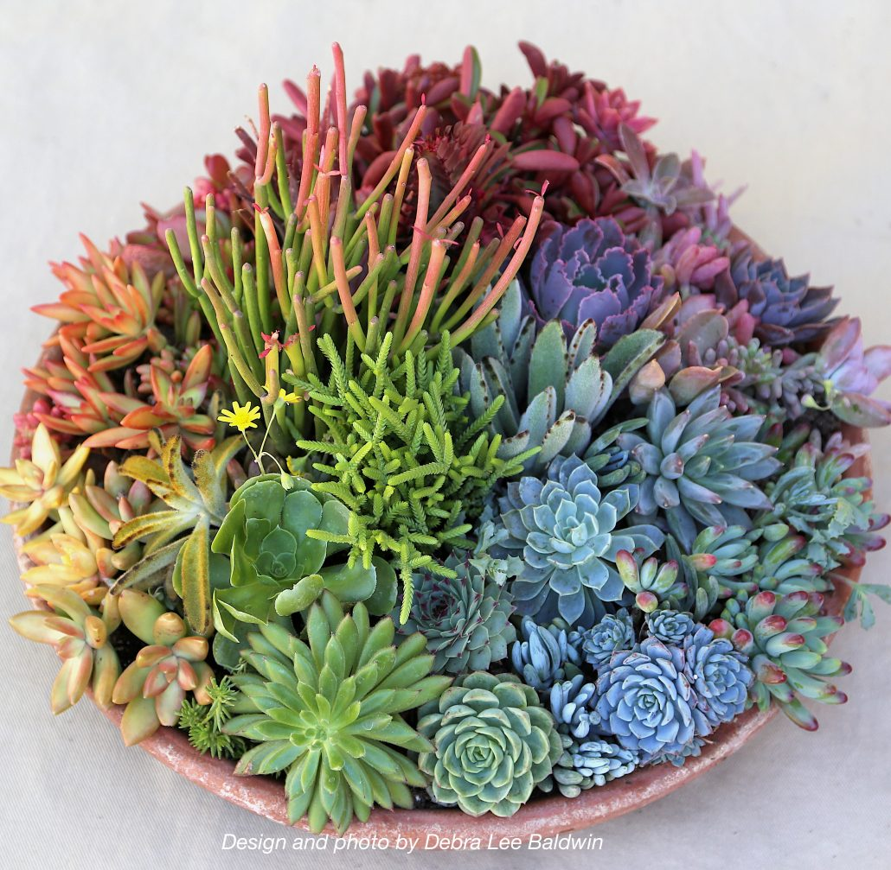
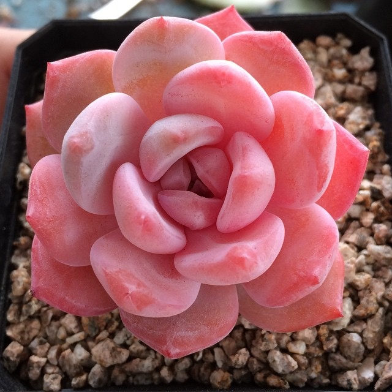
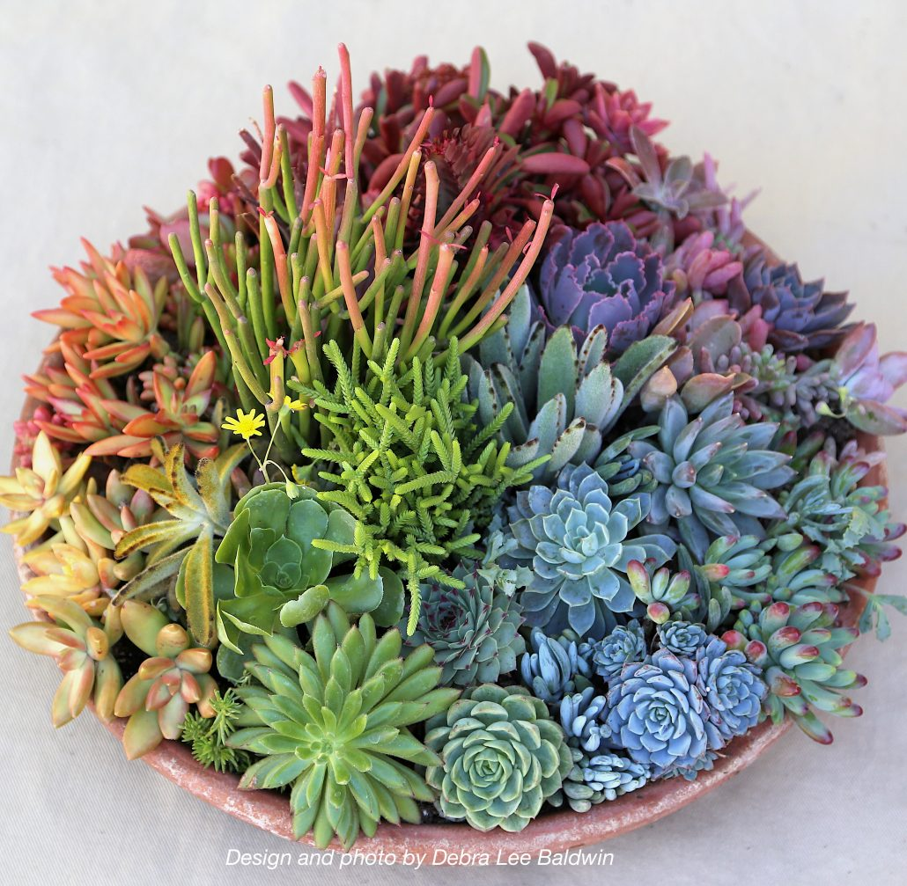
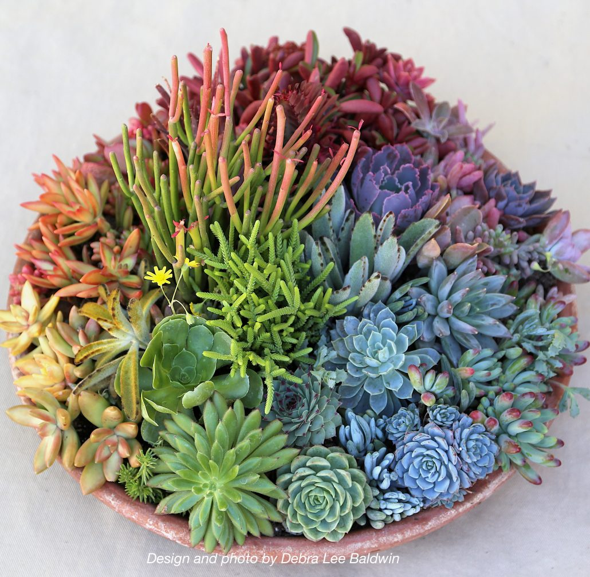

This site is a place for people with appreciations for beautiful succulents. Although we are in a tundra-like environment, succulents can thrive with lots of water, love and sunlight. There is a wide range of succulents to choose from, with each type
more special than the last. It is important when caring for your succulent that you must not over water it. Giving it a drink once a week is the best way to keep your succulent happy and healthy.
Succulents
Succulents are very unique plants! They are the camels of plants, they are able to retain water if they live in a dry environment. Although they are a growing trend amongst millennials, succulents have been around for 5-10 million years. They are related
to the cacti family but are significantly less prickly. Succulents are the perfect plant to brighten up your dreary corporate cubicle! Buy one today!

Pink Succulents

Succulent Tips for Beginners by Garden Answer
For info on how to care for your plant, go to https://youtu.be/f8nsXcxySig
 
